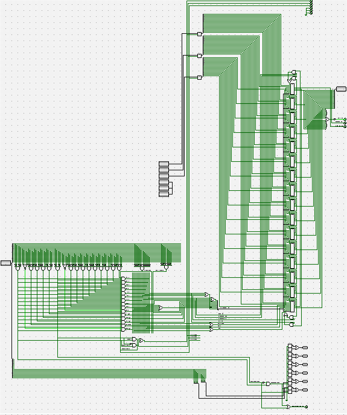

Computer Design
Custom computer architectures with their own custom ISA's built from gate‑logic.
Motivation
Why I built this
Computer 1
I had taught myself boolean algebra and had learnt from articles and videos online, how to build half and full adders and as well as what the basic components of a computer are (ALU, memory, instruction decoder). I knew I would eventually be learning through my classes basic computer architecture which would teach me the way computer design is done and what it looks like but I didn't like the idea of not learning and exploring this on my own first and solving the problems myself without any influence on modern design so I decided to throw myself into make a computer based on my ideas and the basic components I had learnt. This set me off to build my first computer which was an 8 bit computer with 4 bit values (not overly impressive) and a custom ISA that was turing complete.
Computer 2
I took another attempt at making a computer and took the lessons I learnt from my first computer to design a more capable 16 bit computer with a more diverse ISA and sturdier architecture.
Approach
How I built it
Computer 1
The computer has 4 registers
The library is structured around a Layer base class with
forward() and backward() methods. Each layer type
(dense, conv, activation) inherits from it, making it easy to stack layers
into a network.
Gradients are computed analytically and accumulated via the chain rule during the backward pass, then applied by a configurable optimizer (SGD or Adam).
// Example: forward pass through a dense layer
Matrix DenseLayer::forward(const Matrix& input) {
this->input = input;
return activate(weights * input + bias);
}
Results
Outcomes
The library successfully trained on several benchmark datasets and served as the base for the map classifier and architecture search projects.
Reflection
What I learned
Implementing the backward pass manually made the chain rule click in a way that reading about it never did. I also gained a much better intuition for why vanishing gradients happen in deep networks with sigmoid activations.